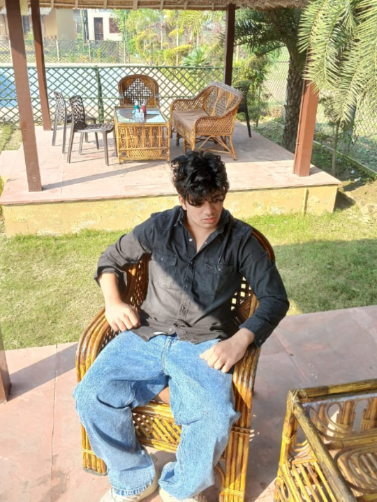

AI / DISASTER MANAGEMENT16.8°N 82.2°E
PROJECT 01Concept / development
CycloneAI
An AI-based concept for identifying, classifying, and predicting tropical cyclone patterns from multi-source satellite data.
DISASTER INTELLIGENCE↗
I'm Shravan, a Data Science student interested in building intelligent systems and understanding what artificial intelligence can learn from the brain.

I'm a Data Science student developing my skills in programming, analytics, and machine learning. I enjoy taking complex ideas and turning them into practical, understandable experiences.
One question keeps pulling me in: what can we learn about intelligent systems by studying the brain? That curiosity is why I'm exploring NeuroAI—the intersection of neuroscience and artificial intelligence.
Projects and learning explorations.
Details can be updated as work progresses.
An AI-based concept for identifying, classifying, and predicting tropical cyclone patterns from multi-source satellite data.
A study of how big data analytics can improve visibility, forecasting, and decisions across global supply networks.
A planned interactive explainer comparing biological neurons with artificial neural networks and simple learning rules.
Project descriptions are introductory summaries. Update status, links, and outcomes to reflect the work you have actually completed.
NeuroAI sits at the intersection of neuroscience and artificial intelligence. It explores two complementary questions: how knowledge about brains can inspire better computational systems, and how AI tools can help scientists understand neural activity and cognition. It is a research direction—not a claim that today's AI works exactly like a biological brain.
Compare how artificial models update from data with biological ideas such as synaptic plasticity and learning from experience.
Explore how systems turn signals into useful representations, from visual features to patterns in neural data.
Study simplified neuron models, networks, and how connected units can produce complex behavior.
Python & data handling → neural-network fundamentals → neuroscience foundations → small, reproducible NeuroAI experiments.
An interactive learning sandbox
for exploring neural signals.
Brain activity can be studied as changing electrical signals. Researchers analyse patterns over time—including oscillations, frequency, amplitude and power—to investigate processes related to sleep, attention and perception. These measures do not map neatly to one mental state, and this demo is a conceptual visualisation, not a brain measurement or diagnostic tool.
Frequency describes how many cycles occur per second. EEG research often discusses broad bands such as delta, theta, alpha, beta and gamma; their boundaries vary by convention and context.
Amplitude is the size of the waveform. Signal power is often related to amplitude squared under specific definitions; it is not a direct measure of mental energy.
This control adds a small simulated change in amplitude over time to demonstrate that real signals are not perfectly regular.
*Illustrative relative power index = (amplitude / 100)² × 100. Arbitrary units for learning only; not calibrated EEG power.
Frequency, energy and vibration — what do they mean here?
In this context, “vibration” is a casual way to describe oscillating signal patterns, not a claim that thoughts emit a special physical vibration. Frequency is cycles per second. Amplitude is signal size. Power describes signal strength under a defined mathematical method. Neural activity is complex and needs context, careful recording and analysis.
Move the controls above. This panel translates the simulated signal into an example of how a data scientist might describe a pattern, ask a research question, and define a measurable project outcome.
At 10 Hz, the selected oscillation sits in a commonly used alpha-range example. The waveform is regular because this is generated data.
Does the rhythm or its power change between two task conditions? A real study would compare recorded segments and control for noise and other variables.
The demo can report the chosen frequency, relative amplitude and an illustrative power index, then visualise how those values change when the inputs change.
Build a small pipeline that extracts signal features (frequency, amplitude, band power and variability), compares labelled segments, and evaluates whether those features help predict a clearly defined task label. Report a baseline, validation method and metrics such as accuracy or F1—only after testing on real, appropriately sourced data.
Scientific boundary: the live wave is synthetic. It cannot reveal what a person is thinking, how focused they are, or their brain's actual energy. EEG frequency bands overlap and vary with context; reliable conclusions require real recordings, study design, and validation.
Explore how researchers study attention using behavioural tasks, reaction times, eye tracking and neural signals. No single frequency proves someone is focused.
Compare encoding, consolidation and recall. A NeuroAI project could test how a simple model learns patterns and retains information over repeated trials.
Study how brain rhythms and sleep stages relate, while remembering that real sleep staging uses multiple signal features and expert-validated methods.
Investigate how the brain combines visual, auditory and body signals into a useful interpretation of the environment.
Educational content only. The interactive waveform is generated mathematically in your browser. It is not recorded from a person, does not infer your cognitive state, and cannot diagnose a condition.
A growing toolkit, with room
for experimentation.
Python · Data analysis · Data visualisation · SQL
⌘Machine learning · Neural networks · AI concepts
⟡NeuroAI · Cognition · Computational models · Scientific computing
◎Skills listed here are a starter set for editing. Remove or adjust anything that does not accurately represent your current experience.
OPEN TO LEARNING & COLLABORATION
Interested in data, intelligent systems, or brain-inspired AI? I'd be glad to connect.
I'm interested in conversations around data science, machine learning, and brain-inspired AI. Find me on GitHub or Instagram, or send me an email.
Email me ↗